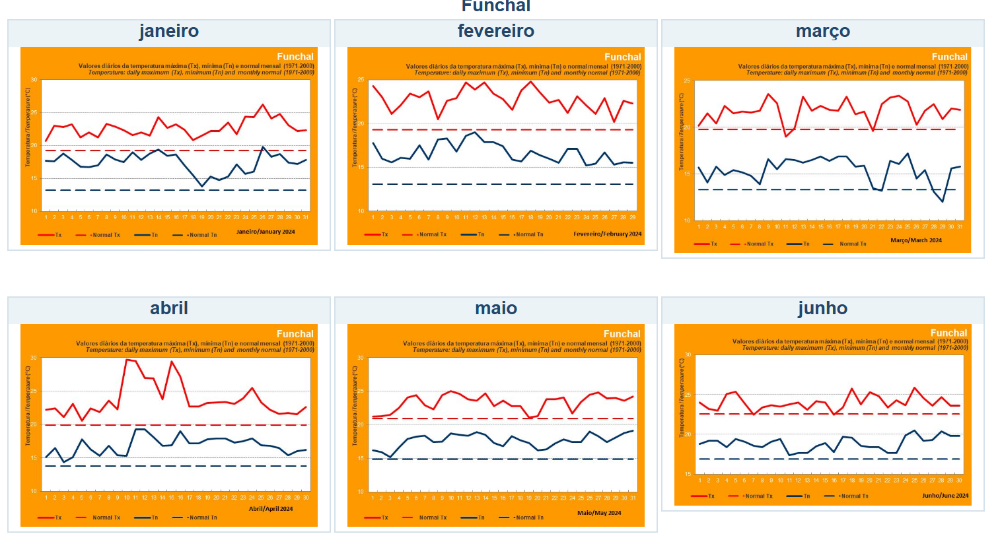
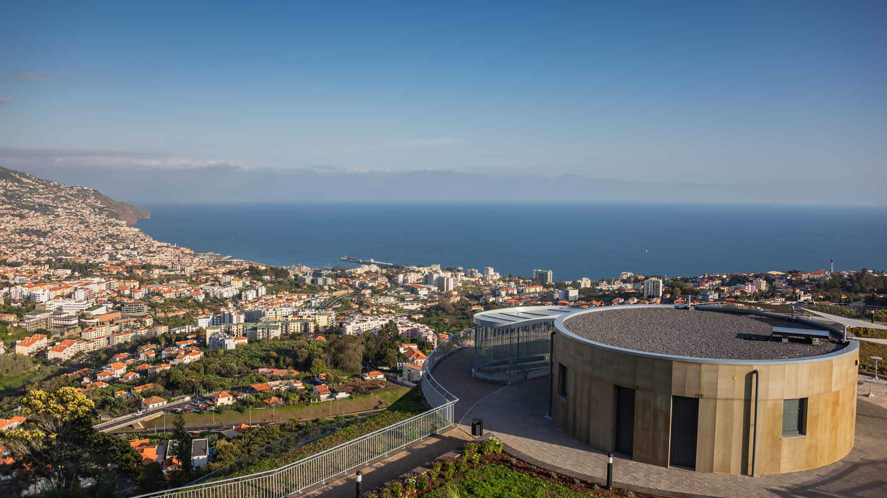
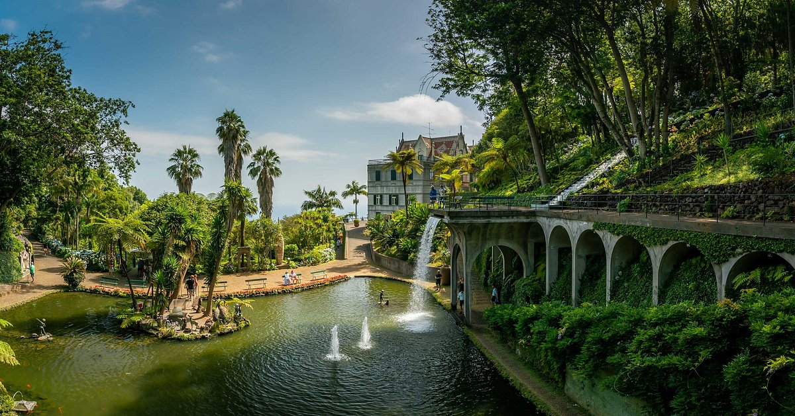
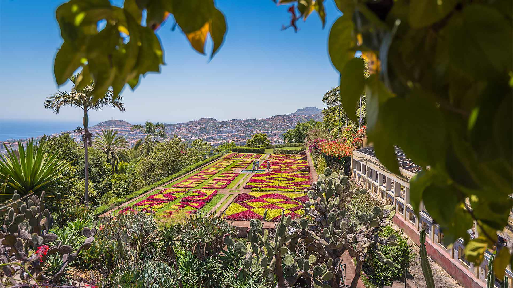
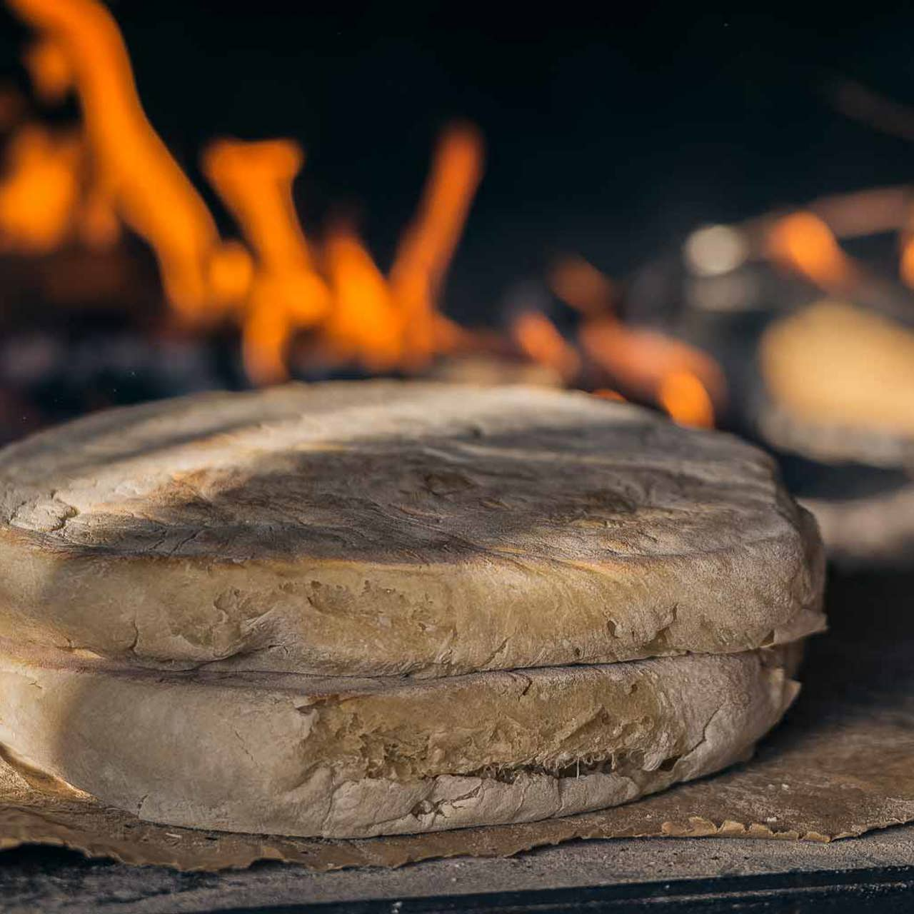
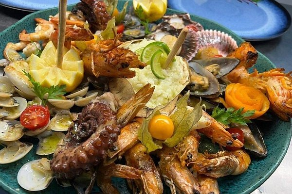
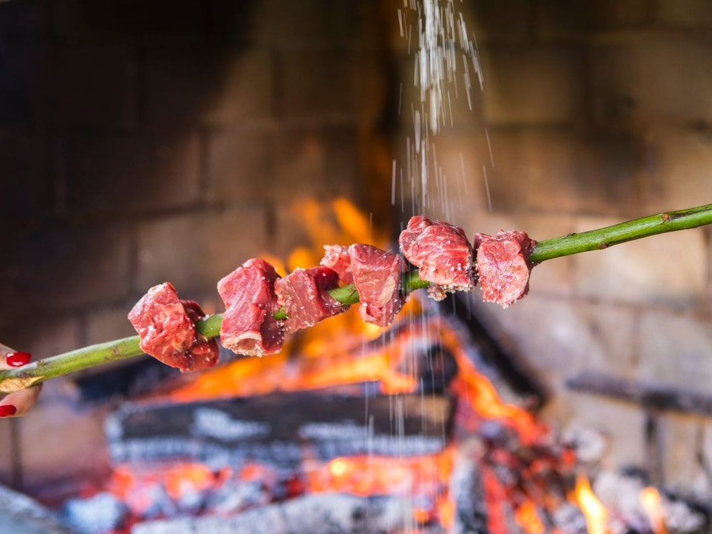
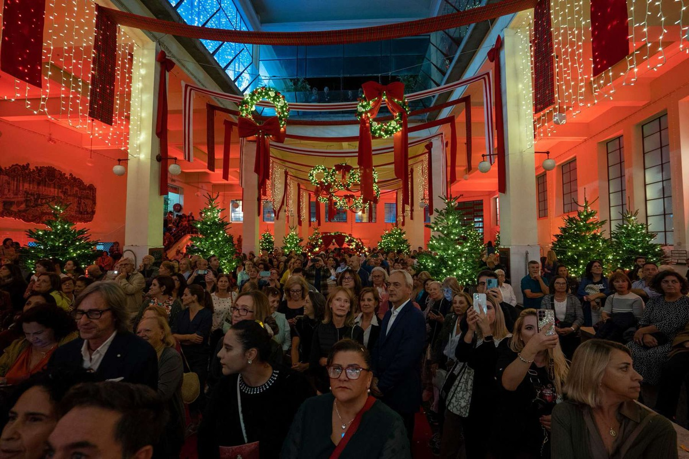
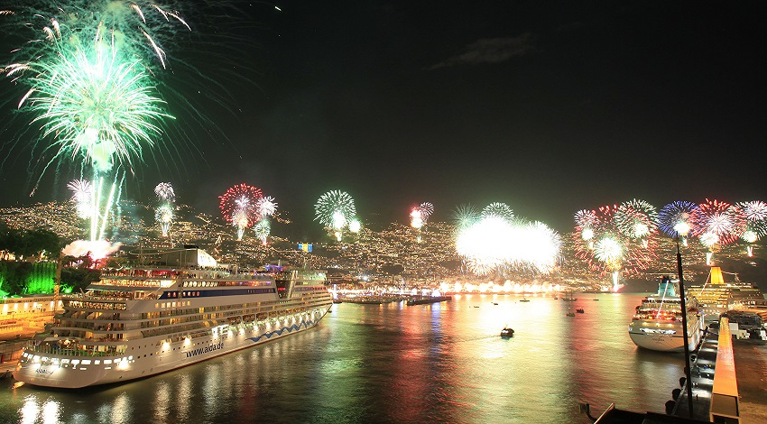
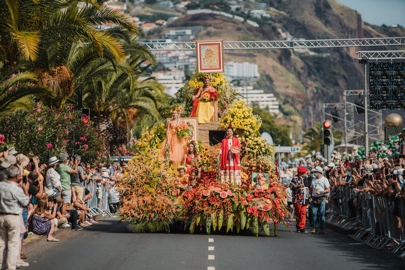

Características Naturais
Com um clima subtropical e paisagens de cortar a respiração, o Funchal é uma joia no Atlântico.

Clima ameno
Principais Atrações
Explore jardins exuberantes, mercados históricos e vistas panorâmicas deslumbrantes.

Miradouro do Pico dos Barcelos

Forte se S. Tiago

Monte Palace Jardim Tropical

Jardins Botânicos
Gastronomia
Saboreie especialidades como a espetada madeirense, bolo do caco e a famosa poncha,lapas entre outras.

Bolo do Caco

Marisco

Espetada Madeirense
Tradições
Participe em festas icónicas como a Festa da Flor, o fogo-de-artifício de Ano Novo e muito mais.

Noite do Mercado do Funchal

Fogo de Ano Novo

Desfile da festa da flor

Cortejo Alegórico e tapetes florais